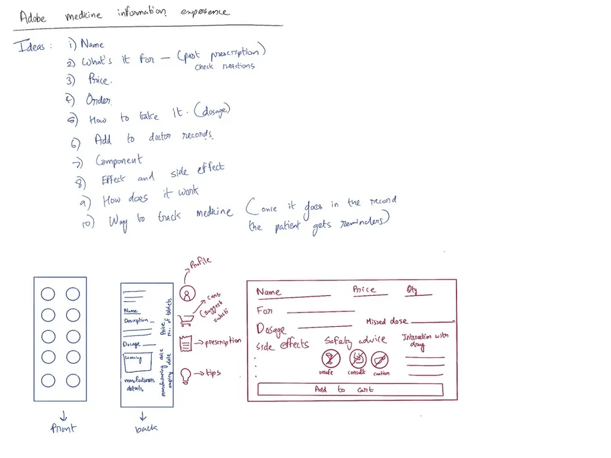
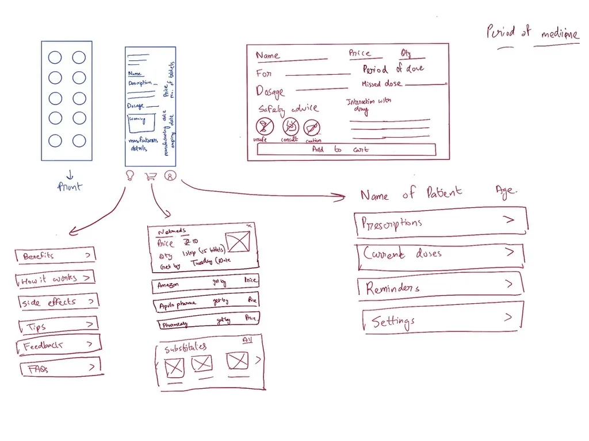
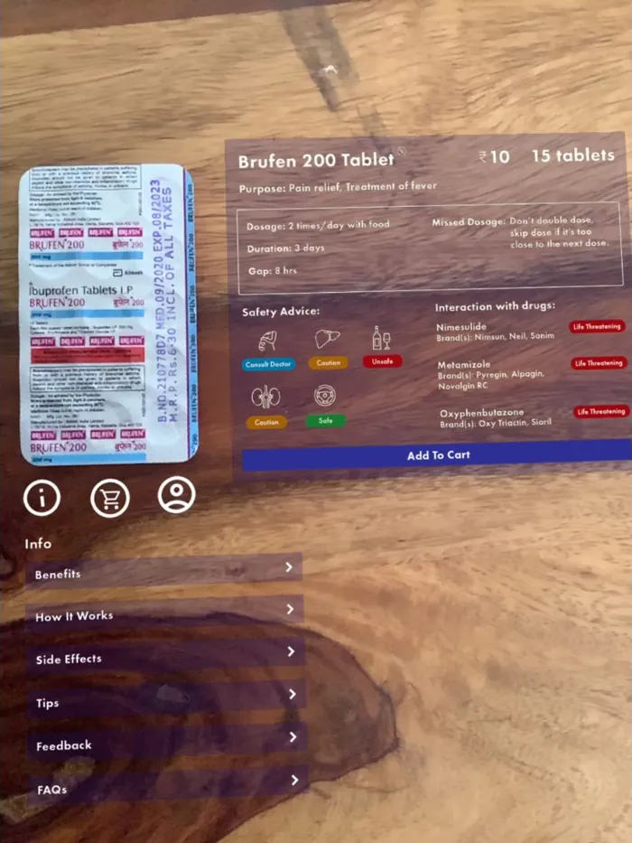

Goal
Design a health-app feature that lets people scan medicine packaging and get critical, easy-to-understand information. The aim was to go beyond identifying the medicine, to an experience that builds safety, understanding and confidence.
Research
I ran semi-structured interviews with a deliberately varied group: people managing chronic illness, parents giving medicine to children, and elderly people on several medications. Questions included:
- “What is the first thing you look for when you pick up a new medicine?”
- “Describe a time you felt confused or concerned about medication instructions.”
- “What information do you find most difficult to locate or understand on packaging?”
- “What would a ‘perfect’ medicine information source provide for you?”

Insights
Clarity, not just data
Leaflets overwhelm. People wanted a cheat sheet with purpose, dosage and key warnings first.
Action-oriented instructions
Jargon causes anxiety. “Take with food” beats “administer with meals to reduce gastrointestinal upset”.
Visual cues
People asked for colour-coding, icons and symbols to recognise the type of information at a glance.
Personal context
Information should be about them: interactions with their other medicines, dosage by age or weight, and whether a pill can be crushed or split.
Key decisions
1. A three-tier hierarchy to beat information overload
- Decision
- Tier 1 answers the urgent questions at a glance: name, what it's for, dosage and for how long. Tier 2 puts details under plain headings like “How it works” and “Side effects”. Tier 3 holds logistics: prices, substitutes and ordering.
- Why
- Insight 1. People wanted the critical facts first and the detail only when they asked for it.
2. Labels written as people's own questions
- Decision
- Sections are named “Benefits”, “How it works”, “Side effects”, “Tips”, “Feedback” and “FAQs”, and instructions use plain, direct language.
- Why
- Insight 2. Framing information around the user's questions, not clinical categories, lowers anxiety.
3. Colour-coded safety signals
- Decision
- Safety advice uses icons with colour tags (Consult doctor, Caution, Unsafe, Safe), and drug interactions are flagged “Life threatening” in red.
- Why
- Insight 3. People can read the risk level before reading a word.
4. From understanding to managing, and to cost
- Decision
- Three icons under the strip open info, shopping and profile. Shopping compares prices and delivery across pharmacies and suggests substitutes; the profile holds prescriptions, current doses and reminders.
- Why
- Insight 4. Understanding a medicine is one step; managing it daily and affording it are the others. Price sits up front to ease cost anxiety.

What I built
I designed the high-fidelity panels in Photoshop, then built a working AR prototype in Adobe Aero to simulate the flow, test the information hierarchy and check the navigation felt intuitive.

For Brufen 200, the panel shows:
- Purpose: pain relief, treatment of fever
- Dosage: 2 times a day with food, for 3 days, 8 hours apart
- Missed dose: don't double up
- Safety icons and three flagged drug interactions
- Price per strip, and Add to cart
The prototype recognises Brufen 200 only, and runs on iOS, because Adobe Aero had compatibility problems on Android.
Outcome
The research showed that managing medication well isn't only about access to information. It's about clarity, control and making informed decisions. The prototype:
- Reduces cognitive load by structuring dense medical data into a scannable hierarchy.
- Supports patient agency with price comparison, substitutes and regimen management right where the information is.
- Bridges understanding and action by linking information to reminders and prescription tracking.